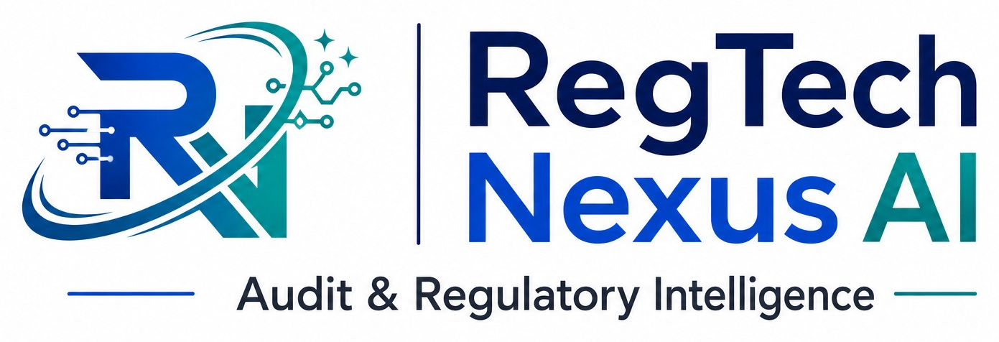

Circular Intelligence
Organise public regulatory publications, capture source metadata, distinguish document types and prepare structured change records for review.
Initial product focus
Explore plans ↓GLOBAL AGENTIC-AS-A-SERVICE · PRODUCT PREVIEW
A global-first RegTech service concept from RegTech Nexus AI, powered by the AlfiQ agent ecosystem. Designed to help compliance, risk and audit professionals organise regulatory change, assess potential impact and manage human review.
THE GLOBAL PLATFORM
The initial commercial entry point is Regulatory Intelligence & Change Impact. Additional specialist agents are planned as separate, governed capabilities—not as claims of already-live functionality.
Organise public regulatory publications, capture source metadata, distinguish document types and prepare structured change records for review.
Initial product focusSupport analyst-led mapping from regulatory changes to business processes, obligations and internal controls, with transparent rationale.
Development capabilityStructure policy review, candidate control gaps, evidence requirements and remediation work for accountable professional assessment.
Planned capabilityProvide research and control-workflow support for AML/CFT, sanctions governance and financial-crime risk topics.
Planned capabilitySupport audit scoping, control-test design, evidence organisation, findings and remediation follow-up.
Planned capabilityHelp organise AI-use-case inventories, risk assessments, control mapping and governance evidence.
Planned capabilityCONTROLLED WORKFLOW
The intended operating model separates source discovery, analyst assessment, independent review and remediation. No AI output is treated as an authoritative legal conclusion.
Identify candidate publications from an approved source register.
Check origin, document identity, status, dates and jurisdiction.
Prepare candidate obligations, affected areas and control mappings.
Require an authorised human reviewer and preserve the decision trail.
Track owners, due dates, status and completion evidence.
INTERACTIVE PREVIEW
This demonstration is entirely local. It does not call an AI model, retrieve regulations, transmit text or save user information.
Illustrative Notice GPSB-2026-004 · 15 September 2026
“Covered payment operators should maintain documented third-party incident escalation arrangements, assign accountable oversight and retain evidence of periodic testing.”
Select a business area and run the demonstration to view a fixed sample output.
The source and output are fictional, pre-authored demonstration content. This is not a live regulatory analysis, legal interpretation, source-monitoring result or evidence of product accuracy.
GLOBAL USD PRICING
Proposed monthly subscription prices. Final usage allowances, feature entitlements, taxes and payment terms will be confirmed before live checkout is enabled.
Free Explorer
$0/month
Product discovery
Professional
$12/month
Individual professionals
Professional Plus
$49/month
Consultants and auditors
Small Business
$99/month
Small fintechs and advisory firms
Business Plus
$299/month
Growing financial-services businesses
Enterprise
Custom
Banks and larger institutions
USD is the primary display currency. Local-currency availability depends on the payment provider and customer location. No payment is currently accepted through this page.
BILLING CONFIGURATION
Provider accounts, merchant approvals, product IDs, API credentials and payout arrangements have not been configured. Plan buttons only open a local preview. No payment details are requested or collected.
TRUST, SAFETY & GOVERNANCE
Regulatory claims must be linked to the originating authority and original instrument. Source authenticity and legal status require explicit verification.
AI-assisted findings remain candidates until reviewed by an authorised professional. Maker-checker separation is a required workflow control.
The public preview accepts no customer documents or confidential data. Do not submit PII, account information, transaction records or restricted institutional material.
Coverage, applicability and effective dates must not be inferred without evidence. No output is legal advice, regulatory approval or a compliance guarantee.
Do not enter or upload customer personal information, bank account details, transaction records, SAR/STR information, confidential institutional documents or other restricted data into public demonstrations or enquiry channels.
GLOBAL PRODUCT DEVELOPMENT
For product demonstrations, pilot discussions and enterprise enquiries, contact RegTech Nexus AI.
Contact the product teamDEMO CHECKOUT · NO PAYMENT
No account is created, no payment provider is contacted, no payment details are collected and no subscription is activated.
Live checkout will only be enabled after provider approval, secure backend integration, entitlement testing and release approval.